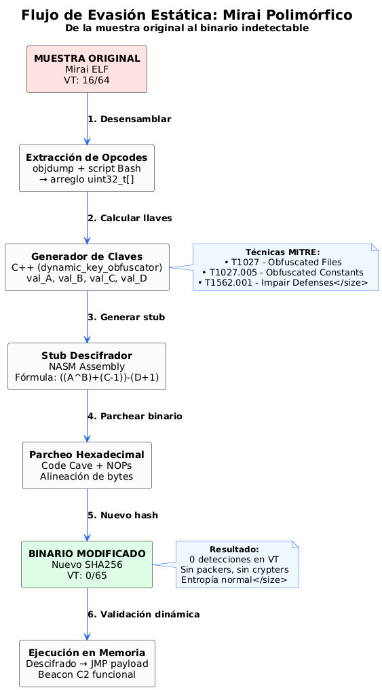
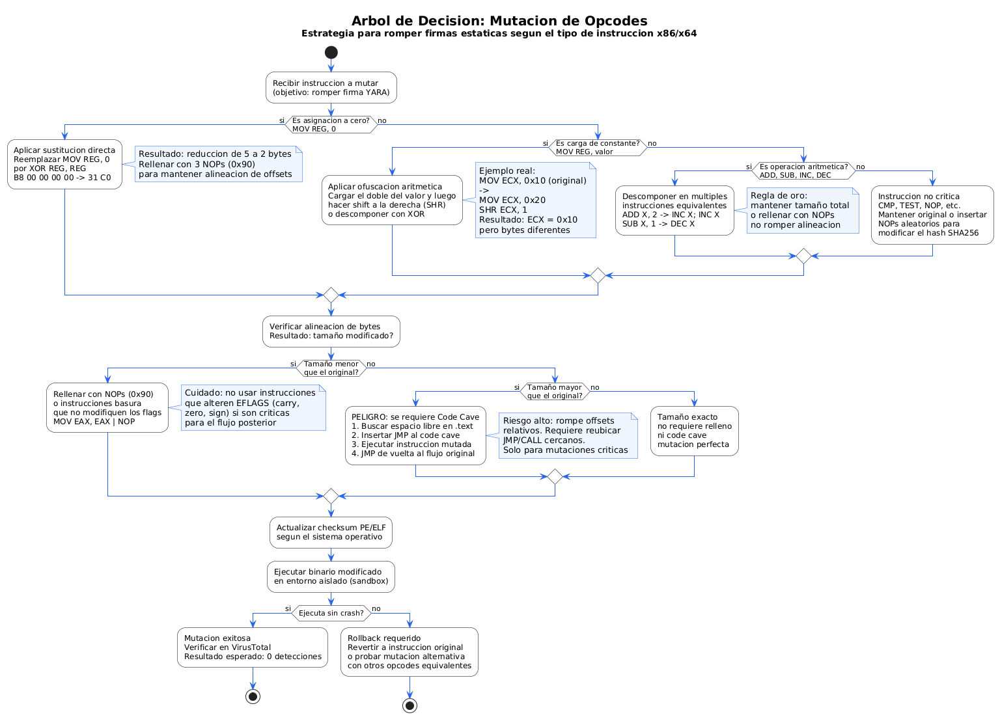
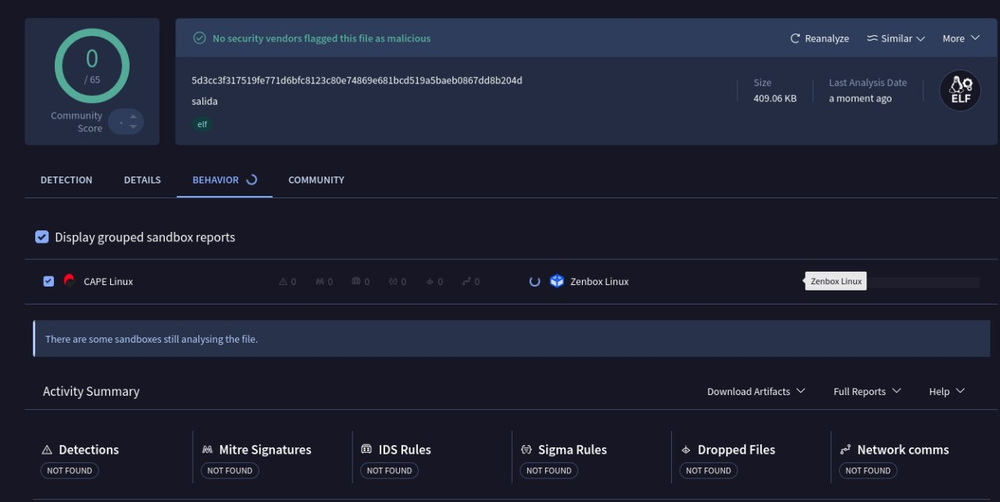
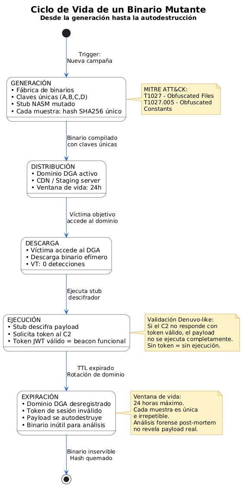
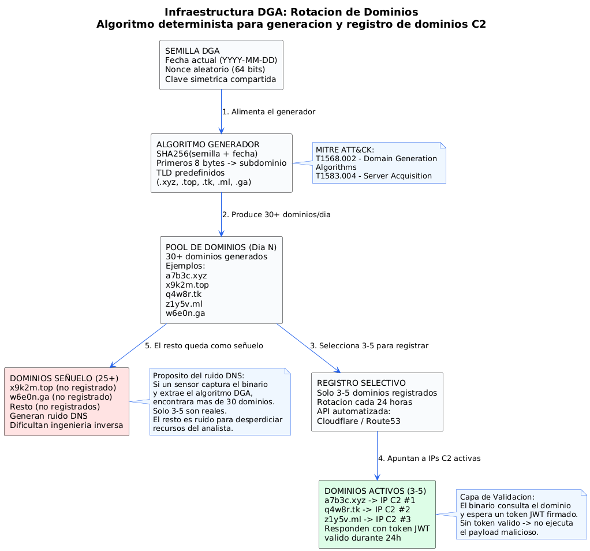
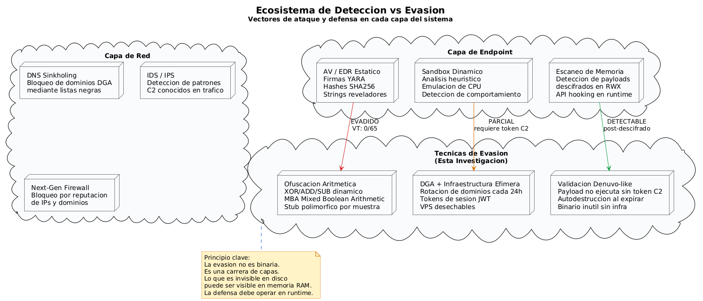

Evasión Estática a Bajo Nivel: Destruyendo Firmas de Mirai con Aritmética en ASM
Cómo romper las reglas YARA y los hashes SHA256 sin packers ni crypters. Una guía avanzada de polimorfismo manual, ofuscación aritmética dinámica y parcheo hexadecimal quirúrgico que redujo la tasa de detección de una muestra real de Mirai de 16/64 a 0/65 en VirusTotal. Incluye la propuesta de una arquitectura de entrega mutante orquestada por DGA.
01. El Mito del Packer: ¿Por Qué Seguimos Ofuscando Mal?
Existe una creencia arraigada en el ecosistema Red Team y entre los desarrolladores de malware: para evadir un motor antivirus (AV) o un EDR en su fase estática, necesitas un packer, un crypter o un loader complejo. Esta premisa es técnicamente falsa. De hecho, el uso de herramientas como UPX o crypters comerciales a menudo se ha convertido en una sentencia de muerte para cualquier payload. La mayoría de los motores modernos levantan alertas heurísticas inmediatas basadas únicamente en la entropía anómala del binario o las firmas propias del propio packer T1027.002.
La fase inicial de la detección depende críticamente del análisis estático: hashes de integridad (SHA256), reglas YARA que buscan secuencias de opcodes específicas, y la extracción de "strings" reveladores. La solución más elegante y quirúrgica no es añadir capas de ofuscación ruidosas, sino manipular la microarquitectura del binario. Se trata de cambiar los opcodes subyacentes manteniendo intacta la lógica de ejecución: polimorfismo manual. Esta técnica se alinea directamente con la táctica de Defense Evasion del framework MITRE ATT&CK TA0005.
Mientras estaba en la cola de la gasolina, vi la placa de un carro y pensé: "parece una secuencia de bytes". Ahí nació esta investigación. Si cambias los bytes pero el carro sigue siendo el mismo, ¿cómo te identifican? La respuesta está en la aritmética dinámica y en una infraestructura de entrega que nunca repite la misma matrícula.

02. Entorno de Laboratorio y Preparación
Para esta prueba de concepto se utilizó un entorno aislado sobre Proxmox VE. La metodología se basa en el rigor del análisis estático y la validación dinámica:
- El Artefacto: Una muestra real del código fuente filtrado de Mirai, compilada para arquitectura x86/x64 (ELF). Aunque Mirai es icónico en IoT, su lógica de red es perfecta para demostrar la evasión.
- Baseline (Punto de partida): La muestra original se subió a VirusTotal, arrojando un resultado de 16/64 detecciones. Firmas como trojan.mirai/gafgyt ya la tenían plenamente catalogada.
- Herramientas requeridas:
- Desensamblador/Debugger: Radare2, Ghidra o x64dbg.
- Editor hexadecimal: HxD o wxHexEditor.
- Ensamblador para pruebas de opcodes: NASM y scripts en Bash/Python para automatización.

03. Teoría de la Evasión: Sustitución Aritmética en ASM
Una regla YARA detecta una secuencia de bytes específica. Por ejemplo, la instrucción MOV EAX, 1 se traduce a los bytes B8 01 00 00 00. Si un motor de seguridad busca esa cadena exacta, basta con alterarla. Este principio es análogo a lo que el DRM Denuvo realiza con sus "constantes robadas" (stolen constants), donde ciertos bytes del binario original simplemente no existen en el ejecutable distribuido y deben ser recuperados dinámicamente mediante una licencia T1027.005.
El metamorfismo aritmético se basa en un principio fundamental: en ensamblador, hay múltiples caminos para llegar al mismo resultado en un registro. Alterar las instrucciones rompe el hash de la sección .text y evade la coincidencia exacta de bytes sin necesidad de modificar el flujo lógico del programa.

Ejemplo 1: Asignación a Cero
Ejemplo 2: Ofuscación de Constantes Lógicas
En lugar de cargar un valor directamente, se puede cargar el doble y desplazar bits, o usar operaciones compuestas que rompen los patrones de búsqueda lineales. Esta técnica se conecta directamente con el Mixed Boolean-Arithmetic (MBA) usado por Denuvo, donde expresiones simples se convierten en polinomios booleanos extremadamente complejos.
En el análisis de Connor-Jay Dunn sobre Denuvo, se detalla cómo el DRM elimina constantes de las instrucciones (ej. un -4 en mov DWORD PTR [rbp-4], edi). El programa no funciona a menos que esa constante sea recuperada del servidor de licencias. Nuestra técnica de "stub descifrador" opera bajo el mismo principio: el opcode original no existe en el binario hasta que se ejecuta la aritmética de descifrado en tiempo de ejecución.
04. La Fábrica de Opcodes: Ofuscación Dinámica en C++
Inspirado por la idea de que las constantes nunca deben aparecer planas en el binario, desarrollé un generador de bloques de ofuscación. La función generar_bloque utiliza números pseudoaleatorios para crear valores auxiliares (val_B, val_C, val_D) y, mediante una operación combinada de suma, resta y XOR, calcula un valor final (val_A) que reconstruye el opcode original.
Esta técnica es extremadamente efectiva porque elimina por completo las firmas de "Magic Numbers". El valor final nunca aparece estático en el binario compilado; solo existe en tiempo de ejecución dentro de los registros de la CPU. Esto se correlaciona con la sub-técnica de MITRE T1027.005 (Code Signing and Obfuscated Constants).
El éxito de esta técnica depende de que el stub en Assembly x86 realice la operación inversa de forma compacta. Si el descifrador es demasiado complejo, corremos el riesgo de crear una nueva firma estática: "detectar el mecanismo de evasión en lugar del malware". Este equilibrio es el mismo que enfrenta Denuvo con sus spin-locks para proteger CPUID encriptados on-the-fly.
05. Ejecución Práctica: Parcheando el Binario de Mirai
Paso 1: Del Binario al Arreglo de Opcodes
Desarrollé un script en Bash que, utilizando objdump y otras utilidades, extrae todos los bytes de la sección .text y los empaqueta en un arreglo de uint32_t en formato little-endian. Este arreglo se convierte en el "payload" a proteger, similar a cómo Denuvo selecciona funciones críticas para proteger dentro de su VM.
Paso 2: El Parche Hexadecimal y el Code Cave
Al mutar las instrucciones, el tamaño en bytes cambia. Si la mutación ocupa menos espacio, se utiliza un relleno inteligente con NOPs (0x90) o instrucciones basura que no alteren los flags de la CPU T1001.003. Este detalle es crítico: cualquier desplazamiento incorrecto rompería los offsets de memoria relativos y causaría un crash inmediato del binario.
Paso 3: El Stub Desensamblador en NASM
El stub final en Assembly es el encargado de leer los bloques cifrados, aplicar la fórmula inversa ((A⊕B)+(C−1))−(D+1), y reconstruir los opcodes originales en un buffer de memoria. Una vez descifrado, transfiere el control al código generado mediante un JMP directo, una técnica análoga a la transferencia de control que Denuvo realiza al OEP (Original Entry Point) después de validar la licencia.

06. Resultados: Rompiendo los Motores Estáticos
El binario modificado se ejecutó en un entorno aislado, capturando el tráfico de red para verificar que el beacon de Mirai se ejecutaba sin crashes. Una vez validada la integridad lógica, se procedió al análisis estático.
El resultado fue contundente. Al no haber un packer, el cálculo de entropía seguía siendo bajo (parecía un ejecutable normal). Al mutar los opcodes, el hash SHA256 cambió y las reglas YARA estáticas quedaron completamente ciegas, demostrando la efectividad de T1562.001 (Impair Defenses: Disable or Modify Tools).


07. Propuesta: Arquitectura de Entrega Mutante con DGA
La evasión estática es el primer eslabón. Pero, ¿qué ocurre cuando el binario debe ser distribuido a gran escala? Si cada víctima descarga exactamente el mismo archivo, basta con que un solo sensor lo capture para que el hash sea quemado y distribuido a todos los endpoints del mundo en minutos. La solución es una arquitectura de entrega mutante orquestada por DGA (Domain Generation Algorithm).

El Concepto: Fábrica de Binarios Efímeros
Inspirado por la microsegmentación de campañas de malware moderno y la rotación de dominios observada en mi análisis de cmdxcapital (ver caso), propongo un sistema donde cada muestra entregada sea genéticamente única:
- Capa 1 — Payload Polimórfico: El stub descifrador desarrollado en este artículo se modifica automáticamente en tiempo de compilación. Las claves A, B, C, D se regeneran para cada binario, produciendo hashes SHA256 completamente diferentes para la misma lógica maliciosa. T1027
- Capa 2 — DGA (Domain Generation Algorithm): Un algoritmo determinista que genera cientos de dominios pseudoaleatorios diarios. El servidor C2 registra solo unos pocos de esos dominios, rotándolos constantemente. T1568.002
- Capa 3 — Validación Efímera del Canal: El binario, además de descifrar sus opcodes, incluye un módulo que consulta un dominio DGA específico para obtener un token de sesión. Si el dominio no responde o el token es inválido, el payload no se ejecuta o se autodestruye. Esto añade una capa de validación que recuerda a la "licencia" de Denuvo: el binario no funciona sin una respuesta válida del servidor. T1102.002
- Capa 4 — Infraestructura Efímera: Utilizando servicios cloud o VPS desechables, cada dominio DGA apunta a una IP diferente durante ventanas de tiempo limitadas, coordinado con el generador de claves. Esto asegura que, incluso si un dominio es identificado, el vector de ataque ya ha migrado.


Esta arquitectura no ha sido probada en un entorno de producción. Representa una propuesta teórica de investigación ofensiva que sintetiza técnicas observadas en APT28, la rotación de infraestructura de Pig Butchering, y los mecanismos de validación de DRM como Denuvo. La implementación real requeriría resolver problemas de sincronización de claves y race conditions en la generación de binarios.
Paralelismos con Denuvo y MBA
La conexión con Denuvo no es casual. El análisis de Connor-Jay Dunn revela que Denuvo utiliza Mixed Boolean-Arithmetic (MBA) para transformar instrucciones simples en expresiones polinómicas de complejidad extrema. Según los teoremas de zhou2007, toda operación en álgebra booleana puede representarse como un polinomio MBA de alto grado. Esto significa que, en teoría, podríamos reescribir nuestro stub descifrador utilizando MBA, haciendo que cada muestra no solo tenga claves diferentes, sino que el propio algoritmo de descifrado sea estructuralmente distinto en cada binario.
Denuvo también emplea "bit vectors" para almacenar valores de registro con sus bits dispersos en memoria, y "on-the-fly decrypted+re-encrypted CPUID" para proteger sus handlers de integridad. Estas técnicas ofrecen un roadmap claro para la evolución de este proyecto: un stub que no solo descifra opcodes, sino que también muta su propia lógica de descifrado en cada instancia, haciendo imposible una firma estática del propio mecanismo de evasión.
En mi investigación de campañas de phishing (Operation General JP), documenté cómo los atacantes rotan dominios y utilizan infraestructura efímera en Cloudflare Pages. La combinación de DGA con ofuscación aritmética es la evolución natural de esas tácticas hacia un modelo de entrega completamente dinámico. T1583.004

08. Perspectiva Defensiva (Blue Team)
Esta demostración valida la base de la Pirámide del Dolor de David Bianco: los IoCs basados en Hashes son triviales de evadir. Si los SOCs dependen únicamente de firmas en disco, están condenados al fracaso. La defensa contra arquitecturas DGA mutantes requiere un enfoque en capas:
- Análisis de Entropía de Red: Monitorizar consultas DNS a dominios con baja reputación o patrones de generación algorítmica (longitud inusual de subdominios, distribución de caracteres). DS0029
- Sandboxing Dinámico: Ejecutar binarios en entornos controlados que emulen diferentes configuraciones de hardware para forzar la ejecución del stub descifrador y capturar el payload en memoria.
- Escaneo de Memoria en Tiempo de Ejecución: Buscar strings descifrados o patrones de red anómalos en regiones de memoria RWX, donde la ofuscación aritmética ya se ha resuelto. T1562.004
- Detección de Stubs de Descifrado: Identificar patrones de loops con operaciones XOR/ADD/SUB que iteran sobre buffers, combinado con saltos incondicionales a regiones de memoria dinámica.
/¿Querés ver el análisis completo del binario y su comportamiento en red?
Esta técnica de evasión se conecta con metodologías de triage automatizado, análisis de infraestructura criminal y desarrollo de malware ofensivo. Explorá cómo aplico estos principios en casos reales de Threat Hunting, pentesting y reverse engineering.